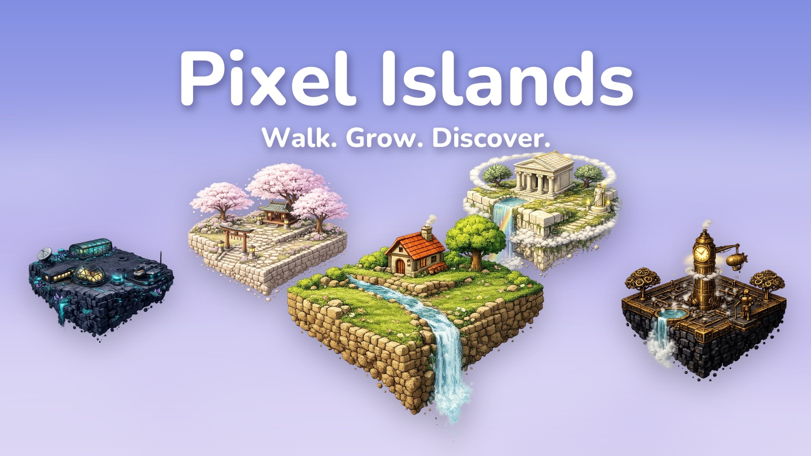
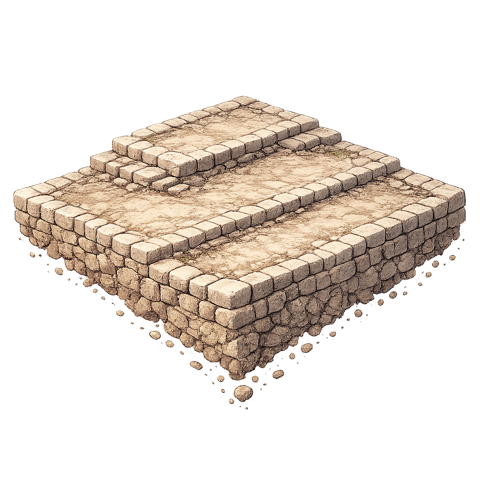
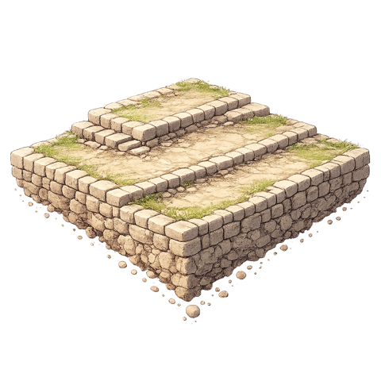
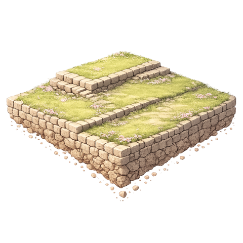
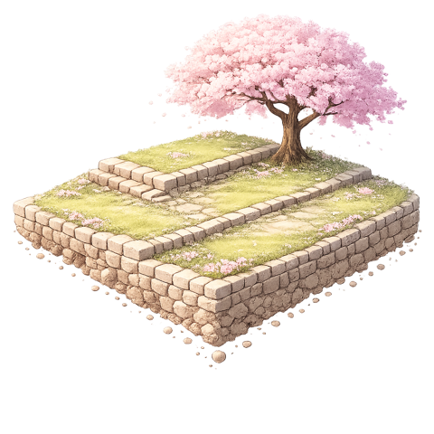
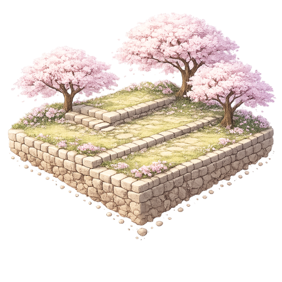
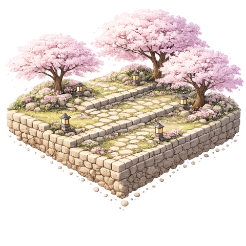
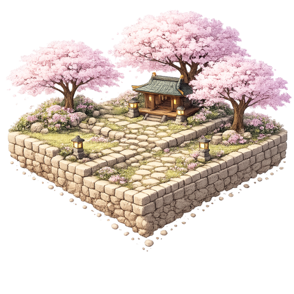
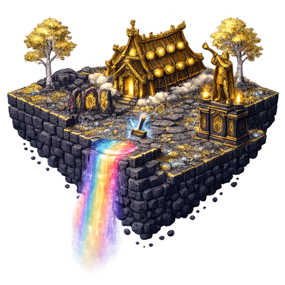
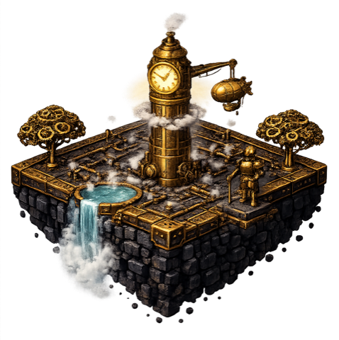

Seus passos fazem crescer
uma ilhinha de pixels
Pixel Islands é um jogo pedômetro aconchegante para iPhone. Caminhe no mundo real e veja sua ilha evoluir em 8 estágios — sem pressão, sem cobrança, só crescimento.

Caminhar, enfim recompensado
Sem coaching, sem culpa, sem estatísticas complicadas. Só um ciclo simples que dá vontade de voltar pra casa pelo caminho mais longo.
1. Caminhe seu dia
O Pixel Islands lê seus passos do Apple Saúde — celular no bolso, Apple Watch no pulso, tudo conta. Sem GPS, sem drenar bateria.
2. Veja a ilha crescer
Cada passo alimenta sua ilha. A rocha nua vira grama, riachos, casas, pequenos mundos inteiros — em 8 estágios.
3. Colecione todas
Termine uma ilha e escolha o próximo tema. Monte uma coleção flutuante de mundinhos movida só pelos seus passos.
Da rocha nua a um mundo vivo
Esta é a ilha Sakura crescendo pelos 8 estágios — com passos de verdade.







App pequeno, muito pra amar
8 estágios de evolução
Cada ilha cresce de rocha nua a um diorama vivo, caminhada após caminhada.
Temas colecionáveis
Santuários sakura, Asgard nórdica, portos steampunk, cyberpunk neon e mais.
Widget na tela de início
Sua ilha mora na tela de início — progresso à vista o dia todo.
Movido pelo Apple Saúde
Lê apenas sua contagem de passos do HealthKit. Sem GPS, sem rastreamento, sem gastar bateria.
Sincronização iCloud
Suas ilhas ficam salvas. iPhone novo? Sua coleção vai junto.
Privado por padrão
Seus dados de saúde nunca são vendidos, nunca usados em anúncios, nunca compartilhados.
Qual ilha você vai criar agora?
Cada ilha concluída desbloqueia a escolha de um novo mundo.
 Sakura
Sakura
Asgard
SteampunkPerguntas, respondidas
Como o Pixel Islands conta meus passos?
O Pixel Islands lê sua contagem de passos do Apple Saúde (HealthKit). Não usa GPS nem roda em segundo plano, então poupa bateria. Todos os passos registrados no Apple Saúde contam, inclusive os do seu Apple Watch.
O Pixel Islands é grátis?
Sim — grátis para baixar e jogar. Um Premium opcional desbloqueia temas de ilha extras e uma leve aceleração.
Meus dados de saúde são privados?
O Pixel Islands lê apenas sua contagem de passos — nada mais — e usa só para fazer sua ilha crescer. Nunca vendidos, nunca usados em publicidade, nunca compartilhados.
O que acontece quando completo uma ilha?
Quando a ilha atinge o estágio final, ela entra na sua coleção e você escolhe um novo tema — de santuários floridos a portos steampunk.
Funciona com Apple Watch?
Os passos do seu Apple Watch vão para o Apple Saúde, de onde o Pixel Islands os lê — suas caminhadas com o Watch contam todas.
Qual iPhone eu preciso?
O Pixel Islands roda em iPhone com iOS 17 ou mais recente e está disponível em 20 idiomas.
Caminhar, pesquisado
Guias do time do Pixel Islands para fazer seus passos valerem.